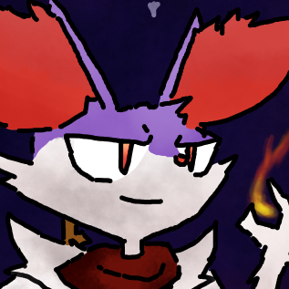

Joey's Homepage



Art Fight
About Me
My name is Joey, but I also go by a few online names such as WePurpyPoo or We32. I was born in Las Vegas and moved to the Bay Area when I was 4 years old; living there ever since. I got a Nintendo DS with New Super Mario Bros. and Pokemon Platinum and I've played a variety of video games ever since. I started making Youtube Videos when I was 12 and have continued that to this current day. I also have done a lot of digital art using a mouse so yea there's some of those.
Art Fight
My Top 10 Favorite Games
- Pokemon Mystery Dungeon Explorers of Sky
- Mother 3
- Pokemon Emerald
- Terraria
- Earthbound
- A Hat in Time
- Fire Emblem Fates
- Fire Emblem Echoes: Shadows of Valentia
- Doki Doki Literature Club Plus
- Pokemon Super Mystery Dungeon
Favorite Pokemon
- Braixen
- Treecko
- Mudkip
- Latias
- cheez
- monstr
- deustch